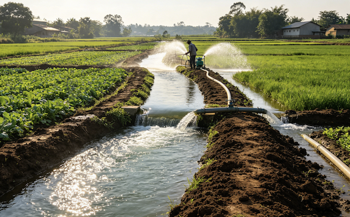
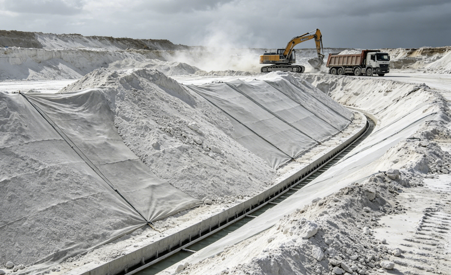

Labor-Intensive Manual Monitoring
Relying on manual field checks for water levels and gate status leads to high operational costs and significant time lags in data reporting.
Automated hydrological sensing for small reservoirs and mountain ponds. Ensuring flood safety and irrigation reliability through real-time water level tracking.

Labor-Intensive Manual Monitoring
Relying on manual field checks for water levels and gate status leads to high operational costs and significant time lags in data reporting.
Inefficient Water Distribution
Without real-time flow sensing, inaccurate water allocation often results in severe water waste and uneven irrigation across the canal network.
Fragmented Information & Silos
Disconnected and offline data sources prevent a holistic view of the district, hindering rapid decision-making for optimal irrigation scheduling.
On-site survey and chemical risk evaluation.

Focusing on the unique challenges of phosphogypsum storage, our engineers perform rigorous onsite assessments of stack morphology and seepage risks. We prioritize environmental safety by evaluating leachate impact.
 Seepage Risks
Seepage Risks Sensor Strategy
Sensor StrategyGNSS integration and multi-sensor fusion.

We deploy a network of all-in-one integrated monitoring stations combining high-precision GNSS with chemical-grade environmental sensors designed for pH 1 environments.
Station Build GNSS Component
GNSS Component Acid Housing
Acid HousingSecure cloud uplink and real-time processing.

Raw sensor data is securely transmitted via 4G/5G/Satellite. Medo AMS performs real-time GNSS baseline processing and precision deformation calculation.
AMS Processing Cloud Computing
Cloud Computing Data Fusion
Data FusionMDT Platform analytics and instant alerting.

The MDT Platform streamlines high-precision data acquisition and remote device management, ensuring the facility’s safety remains manageable and under control.
MDT Dashboard Alert Panel
Alert Panel Risk Management
Risk ManagementReservoirs need monitoring that works without power grids, fiber cables, or on-site staff. Medo's solution is engineered for rapid deployment and unattended long-term operation.
Compact, pre-configured sensor units mount on existing dam structures with no civil works required. A single technician can commission a complete monitoring station in under two hours.
All units run on integrated solar panels with battery backup. Designed for years of unattended operation in off-grid mountain locations with no external power supply needed.
When water levels approach warning thresholds, automated SMS and app push notifications reach local reservoir rangers and village officials instantly — no internet or desktop required.
Where 4G coverage is available, data uploads in real time. In dead zones, LoRa mesh networking relays data to the nearest gateway — ensuring no readings are lost regardless of terrain.
Each component is field-validated for tailings dam environments and integrates natively with the Medo cloud platform.

A 380m deep open-pit coal mine in Shanxi Province faced recurring bench instability events that threatened personnel safety and heavy machinery.
Medo deployed 24 GNSS monitoring stations and 3 robotic total stations, providing millimetric displacement tracking 24/7.